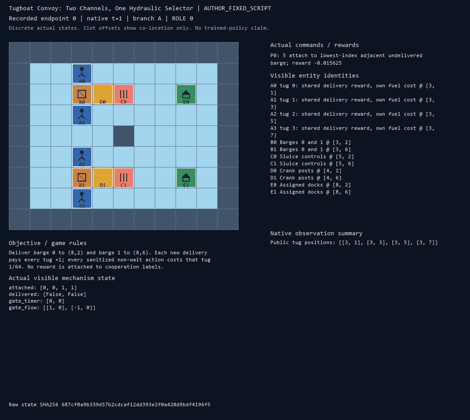
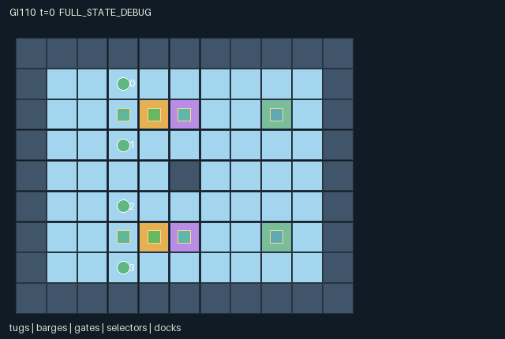

GI110 / SPATIAL
双航道拖船队
两条航道共用同一液压选择器，拖船的控制选择影响伙伴的航道与搬运安排。
Original saved demonstration
Recorded native state, often authored scripts or interventions; information scope and failures are preserved in the original provenance. This is a saved demonstration, not live browser play.

Release verification episode
Untrained uniform legal actions. Actual JAX state sampled along the full original episode; full-state debug camera. No human performance or learning claim.

Run this game
crucibles play --game 110
Start Python locally, then open the address printed by the terminal. Installation, multiplayer, takeover and keyboard controls →
Objective, rewards & ending
Exact task contract
{
"objective": "Deliver barge 0 to (8,2) and barge 1 to (8,6). Each new delivery pays every tug +1; every sanitized non-wait action costs that tug 1/64. No reward is attached to cooperation labels.",
"natural_termination": "Both distinct barges are at their own docks; otherwise the game truncates at 64 steps.",
"interaction": "Opposite perpendicular anchor positions and compatible force votes move whole physical convoys; other boats, cargo, terrain, adverse current and a shared gate selector can prevent movement.",
"observation_access": "All physical state used by decisions is public. Fixed selectors and docks are public map landmarks; ID and current clocks are explicit. No private field or renderer-only strategic information."
}Declared per-step reward bounds: -1 to 2. Observability: fully_observable.
Rules
- Four tugs can attach only from an adjacent square; attached tugs travel with their barge.
- A tow needs opposite anchors perpendicular to movement, a net force of at least two and clear footprints.
- A current opposing a horizontal gate crossing raises required net force to three. North and south currents reverse every eight steps.
- A crank opens its channel for four timer units and closes the other. Multiple cranks use rotating tug priority.
- Tugs fit through closed sluices; a barge entering x=5 needs its selected gate timer positive after countdown.
- New cargo delivery pays every tug +1. Each non-wait legal action costs its actor 1/64.
- Delivered barges remain physical obstacles. Both deliveries terminate; step 64 truncates otherwise.
Original mechanism document (historical status wording retained)
# Tugboat Convoy: Two Channels, One Hydraulic Selector Status: **AUTHORED_NOT_EXECUTED**. Source SHA-256: fbc6da3df61915cf82a7b5d395befa7b60e480b958266083e6df10ed664a0c60. A/O/U/H = 4/142/12/64. All playthroughs and paired interventions are **UNEXECUTED_AUTHOR_HYPOTHESIS**. ## Rules and interaction The actual world is an 11 by 9 harbour. Cargo centres start at (3,2) and (3,6), with two tugs bracketing each load north/south. Both can be delivered eastward, but the x=5 pier divides the routes into north and south three-row channels. Selector posts at (4,2)/(4,6), gates and docks are physical coordinates used by the kernel. A tug can attach to one adjacent undelivered cargo. A tow action is a cardinal force vote, not an independent agent move. The dominant force axis must be unique. Two agents voting along that axis must occupy opposite positions perpendicular to travel. Every attached tug then translates with the load. This preserves attachment geometry; detached swimmers and the other cargo can block the footprint. Convoys resolve in rotating barge order, so first movement can free or consume another convoy's space. The two cranks share one hydraulic selector. A crank resets its selected gate to four and sets the other to zero; competing requests use rotating tug priority. Timers count down before towing. Entering any square of a gate lane at x=5 requires a positive updated timer. Swimming tugs can cross a closed sluice; barges cannot. North current initially points east, south west, and signs reverse every eight steps. Entering or leaving x=5 against the current requires net force three rather than two. The observation shows the current that the next transition will use. A barge freezes at its own dock and all attached tugs are released. Delivery is a full task event, not an attach/crank intermediate event. Each delivery yields +1 to every tug; each non-wait sanitized action costs its actor 1/64. This creates free-riding and wasted-force costs without rewarding an arbitrary cooperation variable. ## Strategies, failures and variations A pair may finish one cargo while the other pair waits for its favourable current, or detach/reassign a third tug to overpower adverse current. Gate ownership may alternate or prioritize one cargo. Pulling while a partner cranks cannot satisfy a two-vote tow; guarding a clear path by staying out of it may outperform occupying it. Additional tug help costs that tug fuel and may block another route. None of these strategies has been executed or measured. Blocking, opposed votes, insufficient force, wasted crank timing and timeout can leave either cargo undelivered. No success script or learnability guarantee is asserted. Alternative maps, starting anchors, current schedules or gate lifetimes could alter the needed strategy in separately specified future tasks; this source contains exactly the stated fixed map and rules. ## Declared invariants and observations There are always four distinct tug positions and exactly two cargo identities. Each attached tug remains at Manhattan distance one from its own cargo; a successful tow translates every member equally. Cargo identities never duplicate, delivered status is monotone and only matching docks pay. Gate timers stay between zero and four and no two gates have positive timers after any crank. All map locations, attachments, delivery flags, timers and current vectors are public. Manifest observation slices enumerate all 142 columns, including every public event flag. State/scene entities are actual footprint positions, not decorative copies of unrelated scalar variables. ## Boundary, invalid actions and terminal behavior The native interface is GeneratedEnv.reset(key), observe(state), legal_actions(state), and raw_step(key, state, int32[A]). Native learning receives only float32[A,O] observations and bool[A,U] masks. Out-of-range or masked-illegal actions become action 0 without action cost. Joint conflicts can still prevent legal attempted actions from succeeding. All roles remain active until joint completion; there are no individually terminated roles. At joint completion, only no-op is legal. A nonterminal step increments scalar int32 t exactly once. Natural completion takes precedence over the horizon. An already-terminal raw call preserves every state leaf, clock, observation and terminal cause; it returns zero float32 rewards and all-true dones. No raw autoreset occurs. The agent-keyed public JaxMARL adapter belongs to the separate trusted engineering layer: use agent_0 through agent_3, preserve row/action order and masks, and set the done dictionary __all__ from info.done_all. The raw array contract and frozen learner are unchanged. Adapter execution and compatibility are not claimed here. State indices, sentinels, counts, stages and temperatures use int32; visibility/termination use bool; observations/rewards use float32. All normalization divisors are powers of two. This boundary representation does not replace a previously specified random distribution. The PRNG key is not copied into state. Reset and transition are deterministic; the key is accepted but unused. Seed does not imply a hidden randomized layout. The map is public knowledge. Role rendering must honor the same entity visibility masks as native observations and suppress hidden attributes. Only public channels appear in events; private source leaves are not display attributes. Full-state debug views require a separate label. Scene positions, active flags, visibility and attributes bind real state; no presentation-generated transitions or executable markup occur. ## Literal source evidence - Actual map, anchors, cargo and docks initialize fixed int32 geometry. candidate.py:L15-L44 (exact excerpt SHA-256 443c75c89bcd7765517e644cc47fc39aae60b4a1566cac02b183c5a8f93b7f17). - Complementary anchored force is required, not a cooperation label. candidate.py:L128-L133 (exact excerpt SHA-256 9ec51ea100586b25dd6b3a200e194f30dc85fa4940d79168026cd623b423770b). - Shared gate selection changes both channel timers. candidate.py:L100-L108 (exact excerpt SHA-256 df92bd496a69b39738d1ac59d6b4e86aad42a91ed3d6de7e3ff00ba4dbe1f6de). - Gate/current rules and physical collision checks determine cargo motion. candidate.py:L144-L154 (exact excerpt SHA-256 b29f5b4e02dbff1f7cda955bf9bd741cd1efff5a9c5a2caa641e52d6bdfcf6b6). - Matching-dock delivery flags detach all members. candidate.py:L155-L157 (exact excerpt SHA-256 2863c931c3db61ab30b88a9446aa2a497ece4f5cc5a77c70d603e87900073ecd). - Native observation binds public physical fields. candidate.py:L68-L81 (exact excerpt SHA-256 94c1a483d189295cac84dc6ac9f76ad327c40d06c50ba919f1da16a5a49d1898). - Terminal calls preserve every state leaf and pay zero. candidate.py:L173-L177 (exact excerpt SHA-256 40e10d72edba7e17f3a6fbff623186a6ee8d5496fb988112e317c7f21a33c01d). ## Interface method locations - moves: candidate.py:L12-L13. - reset: candidate.py:L15-L44. - free_targets: candidate.py:L46-L54. - legal_actions: candidate.py:L56-L66. - observe: candidate.py:L68-L81. - raw_step: candidate.py:L83-L177. ## Reference attribution and limits Original rules and kernel were authored for this assigned design. No upstream implementation code, layouts, assets, sprites or trained parameters were copied. JaxMARL's README supplied the agent-keyed dictionary and parallel-action integration convention. Pgx's README supplied board-state, explicit legal-mask and external-random-key API reference. Craftax's README supplied the general example of executable spatial resources and staged game mechanics in JAX. PureJaxRL is an algorithm implementation reference, not a new environment library. The supplied Craftax_Baselines PPO-RNN header credits PureJaxRL; it was consulted only as baseline/integration reference and was not copied or substituted for the frozen learner. No reference performance claim is evidence about these games. Snapshot identity was checked in full; consulted passages were API/overview material and the first 120 lines of the PPO-RNN reference. - references\JaxMARL_README.md: [official snapshot origin](https://github.com/bold-lab-ai/JaxMARL/blob/main/README.md), SHA-256 6649d04f5ed05d620e78e8416a00d4db841cf2633ae60fdb3c9729e037a71c15; verified 12438 bytes. - references\Pgx_README.md: [official snapshot origin](https://github.com/sotetsuk/pgx/blob/main/README.md), SHA-256 153f44999e55d5df3e51e13dee6ef418cc9704ddfa26206f1dc5789b9cbbf8df; verified 17543 bytes. - references\PureJaxRL_README.md: [official snapshot origin](https://github.com/luchris429/purejaxrl/blob/main/README.md), SHA-256 d5f40182c924a42cec820931e61a7d5070e48c4c8413c7d16455abc6ea0ef6b0; verified 5023 bytes. - references\Craftax_Baselines_ppo_rnn.py: [official snapshot origin](https://github.com/MichaelTMatthews/Craftax_Baselines/blob/main/ppo_rnn.py), SHA-256 5f93e6a7c3a1e0c551831d75be311735ba495dfdecae51787a1c03a27b1cd011; verified 18983 bytes. - references\Craftax_README.md: [official snapshot origin](https://github.com/MichaelTMatthews/Craftax/blob/main/README.md), SHA-256 7f9757a2047143cf183f7e2e84851a740f386af80dbee050c89b316d66a3d3ff; verified 12388 bytes. ## What was and was not checked Only AST parsing, the supplied whitelist, JSON manifest validation, scene-schema validation, declared-state-key agreement, source byte cap, hashes and script integer-vector structure were checked. The candidate was never imported, compiled, run or numerically simulated. JAX and NumPy were absent from the checker process imports. Reset/step shapes and dtypes, eager/JIT/vmap parity, numerical bounds and conservation under execution, repeated-seed replay, trajectory legality, real paired effects, absorbing execution, rendering, playback/pause/step, public adapter, policy training, solvability and meta-learning remain unexecuted. No acceptance score, success-rate threshold, ranking or final-test information was used.
Commands
Roles & abilities
agent_0 tug 0: shared delivery reward, own fuel cost
agent_1 tug 1: shared delivery reward, own fuel cost
agent_2 tug 2: shared delivery reward, own fuel cost
agent_3 tug 3: shared delivery reward, own fuel cost
Observation permissions
Training receives only the original observation rows. Role cameras use declared visibility; debug cameras are explicitly marked. Local benchmark records log debug exposure and role takeover history.
Exact observation layout
[
{
"slice": [
0,
4
],
"meaning": "Self identity one-hot over four tugs",
"visibility": "self"
},
{
"slice": [
4,
20
],
"meaning": "Four public tug blocks [x/16,y/16,(attached+1)/2,active] in ID order",
"visibility": "public"
},
{
"slice": [
20,
26
],
"meaning": "Two public barge blocks [x/16,y/16,delivered]",
"visibility": "public"
},
{
"slice": [
26,
34
],
"meaning": "Two public gate blocks [x/16,y/16,timer/4,next-transition current x]",
"visibility": "public"
},
{
"slice": [
34,
35
],
"meaning": "Public clock t/64",
"visibility": "public"
},
{
"slice": [
35,
134
],
"meaning": "Public 9x11 map flattened y-major, tile value/4",
"visibility": "public"
},
{
"slice": [
134,
142
],
"meaning": "Public event flags in order: tow_moved[2],tow_blocked[2],delivered_step[2],gate_changed[2]",
"visibility": "public"
}
]Entity visibility & attributes
[
{
"id": "tugs",
"kind": "agent",
"count": 4,
"position": [
"agent_pos"
],
"active": [
"agent_active"
],
"visibility": [
"agent_vis"
],
"attributes": [
{
"state_path": [
"attached"
],
"meaning": "Attached barge index; -1 means detached",
"display": "category"
}
]
},
{
"id": "barges",
"kind": "object",
"count": 2,
"position": [
"barge_pos"
],
"active": [
"barge_active"
],
"visibility": [
"barge_vis"
],
"attributes": [
{
"state_path": [
"delivered"
],
"meaning": "At its assigned dock and permanently stationary",
"display": "flag"
}
]
},
{
"id": "gates",
"kind": "gate",
"count": 2,
"position": [
"gate_pos"
],
"active": [
"gate_active"
],
"visibility": [
"gate_vis"
],
"attributes": [
{
"state_path": [
"gate_timer"
],
"meaning": "Open timer; decays before next tow resolution",
"display": "bar"
},
{
"state_path": [
"gate_flow"
],
"meaning": "Current vector for the next nonterminal transition",
"display": "direction"
}
]
},
{
"id": "selectors",
"kind": "landmark",
"count": 2,
"position": [
"control_pos"
],
"active": [
"control_active"
],
"visibility": [
"control_vis"
],
"attributes": []
},
{
"id": "docks",
"kind": "landmark",
"count": 2,
"position": [
"dock_pos"
],
"active": [
"dock_active"
],
"visibility": [
"dock_vis"
],
"attributes": []
}
]Actual verification & provenance
Per-game execution receipt
{
"game": "gi110",
"status": "PASS",
"verification_revision": 2,
"source_sha256": "fbc6da3df61915cf82a7b5d395befa7b60e480b958266083e6df10ed664a0c60",
"seed": 20261101,
"runtime": {
"jax": "0.4.38",
"numpy": "1.26.4",
"devices": [
"TFRT_CPU_0"
]
},
"dimensions": {
"num_agents": 4,
"observation_size": 142,
"num_actions": 12,
"max_steps": 64
},
"checks": {
"eager_reset": {
"status": "PASS",
"seconds": 1.1922552585601807
},
"observation_spaces_legal_masks": {
"status": "PASS",
"seconds": 1.5134501457214355
},
"eager_step": {
"status": "PASS",
"seconds": 2.7938122749328613
},
"jit_reset": {
"status": "PASS",
"seconds": 0.09926557540893555
},
"jit_step": {
"status": "PASS",
"seconds": 0.8728370666503906
},
"eager_jit_integer_parity_float_measurement": {
"status": "PASS",
"seconds": 0.00106048583984375
},
"jit_vmap_reset": {
"status": "PASS",
"seconds": 0.21449828147888184
},
"jit_vmap_step": {
"status": "PASS",
"seconds": 1.0187015533447266
},
"outer_autoreset_api": {
"status": "PASS",
"seconds": 0.9413566589355469
},
"full_original_horizon_episode_and_render": {
"status": "PASS",
"seconds": 0.9371035099029541
}
},
"human_scores": null,
"browser_controls": "PENDING",
"failures": [],
"elapsed_seconds": 10.237869024276733,
"float_parity_max_abs": 0.0,
"numerical_parity": "EXACT",
"raw_terminal_absorbing": "PASS",
"terminal_outer_reset": "PASS",
"episode_steps": 64,
"scripted_random_returns": [
-0.84375,
-0.734375,
-0.859375,
-0.78125
],
"terminal": true,
"demo_information": "FULL_STATE_DEBUG",
"demo_frames": 33,
"render_roles_checked": 4
}Chromium control verification
{
"game": "gi110",
"status": "PASS",
"human_scores": null,
"engineering": true,
"checks": [
"catalog_selected_and_real_native_reset",
"keyboard_native_direction_command",
"dom_queue_and_native_step",
"second_participant_ownership_and_native_joint_step",
"all_roles_individually_controllable_no_role_cap",
"explicit_debug_camera",
"release_to_pure_ai_without_reset",
"close_session_preserves_log"
],
"ui_sha256": "96243f9de144b80b5e20a114330e2206bdcd58d3efc9c6f13bbc08b95cacc14d",
"keyboard_action_id": 2,
"seconds": 5.3722944259643555
}Original identity and file hashes
{
"id": 110,
"key": "gi110",
"title": "双航道拖船队",
"summary": "两条航道共用同一液压选择器，拖船的控制选择影响伙伴的航道与搬运安排。",
"tags": [
"拖带协作",
"共享设施"
],
"family": "spatial",
"dimensions": {
"num_agents": 4,
"observation_size": 142,
"num_actions": 12,
"max_steps": 64
},
"source_sha256": "fbc6da3df61915cf82a7b5d395befa7b60e480b958266083e6df10ed664a0c60",
"manifest_sha256": "aef21dc5a315461f05880953035d15328c418d80f089137b62d8a5d08815ae05",
"files": [
{
"file": "candidate.py",
"sha256": "fbc6da3df61915cf82a7b5d395befa7b60e480b958266083e6df10ed664a0c60",
"bytes": 11235,
"origin": "work/exp_2/game_incubator_v3/community_games222_225_visualization_root222_v1/native154_candidate/registry/v2/games/game-v3-00110/candidate.py"
},
{
"file": "manifest.json",
"sha256": "aef21dc5a315461f05880953035d15328c418d80f089137b62d8a5d08815ae05",
"bytes": 11389,
"origin": "work/exp_2/game_incubator_v3/community_games222_225_visualization_root222_v1/native154_candidate/registry/v2/games/game-v3-00110/manifest.json"
},
{
"file": "scene.json",
"sha256": "28104a45b31fa2cbe78dc94c37f4d4619fc58828bbf2a38376f7ff9acda33f70",
"bytes": 6190,
"origin": "work/exp_2/game_incubator_v3/community_games222_225_visualization_root222_v1/native154_candidate/registry/v2/games/game-v3-00110/scene.json"
},
{
"file": "mechanism.md",
"sha256": "56c34788553cdd6f96efaab4fb12226723e5192809f0d40db470764370dedc75",
"bytes": 9930,
"origin": "work/exp_2/game_incubator_v3/sources/game-v3-00110/attempt_00/mechanism.md"
},
{
"file": "playthrough.json",
"sha256": "e16510df3efc32dff90bacafb05840895547a65e62d900db3920615b8fb17257",
"bytes": 3486,
"origin": "work/exp_2/game_incubator_v3/sources/game-v3-00110/attempt_00/playthrough.json"
}
],
"original_status": "NATIVE154_REFERENCE",
"original_saved_replay": true,
"release_validation": "PASS",
"human_scores": null,
"browser_validation": "PASS"
}